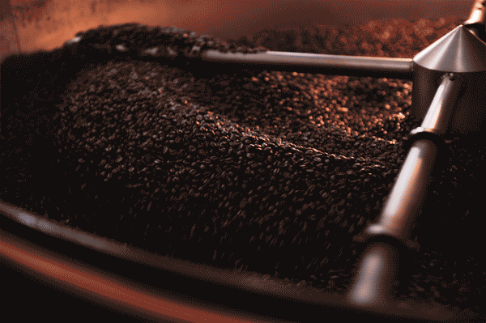

Sobre Nosotros

NUESTRA MISIÓN
En Santo Cafe, nuestra misión es simple:
Preparar una taza de café perfecta en un ambiente acogedor y amigable. Nos esforzamos por crear un lugar donde las personas puedan disfrutar de un buen café y momentos memorables con amigos y seres queridos. Para inspirar y nutrir el espíritu humano: una persona, una taza y un vecindario a la vez.
NUESTROS VALORES
- Crear una cultura de calidez y pertenencia, donde todos sean bienvenidos.
- Entregando lo mejor de nosotros en todo lo que hacemos, haciéndonos responsables de los resultados.
- Actuar con valentía, desafiar el statu quo y encontrar nuevas formas de hacer crecer a nuestra empresa y a los demás.
- Estar presente, conectando con transparencia, dignidad y respeto.
TRABAJA CON NOSOTROS
Si te apasiona el café y quieres formar parte de un equipo dinámico y colaborativo, ¡envía tu currículum!
Excelente café en todas partes